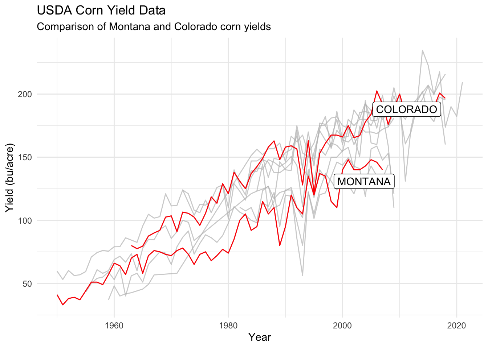

library(dplyr)
library(ggplot2)
library(gghighlight)GGPlot Assignment
Description
I downloaded corn yield data from USDA’s quick stats lite site so that I could compare corn yields for irrigated land over time from a couple of states of interest: Montana (where I will be moving to) and Colorado (because of CSU).
To replicate the data one can visit the site linked above and apply the filters described below:
- Sector = CROPS
- Group = FIELD CROPS
- Commodity = CORN
- View = Acreage, Yield, and Production - Irrigated / Non-Irrigated
- Year = 1950-2022
- Geographic Level = State
Note: I exported data for all states, but had to do it in two exports. The tool provided an empty CSV when I attempted to select data for all states at once. This data is also available in this GitHub repo.
Load Data
# Read data from a csv file
# data <- read.csv('corn_production.csv')
data1 <- read.csv('corn_production1.csv')
data2 <- read.csv('corn_production2.csv')
data <- bind_rows(data1, data2)
# Change the names to lower case so that they're easier for me to work with
names(data) <- tolower(names(data))Data preparation
Here I will rename, select a subset of columns, and filter the data to records that have data for production as well as those where the corn was grown on irrigated land.
# Rename, select a subset of columns, and filter
data <- data %>%
rename(
production=production.in.bu,
harvested_area=area.harvested.in.acres,
yield=yield.in.bu...acre
) %>%
filter(
production > 0,
prodn.practice == 'IRRIGATED'
) %>%
select(year, location, prodn.practice, harvested_area, production, yield)Plotting
ggplot(data, aes(x=year, y=yield)) +
theme_minimal() +
geom_line(aes(group=location), color='red') +
gghighlight(location %in% c('MONTANA', 'COLORADO')) +
labs(
title='USDA Corn Yield Data',
subtitle='Comparison of Montana and Colorado corn yields',
x='Year',
y='Yield (bu/acre)'
)